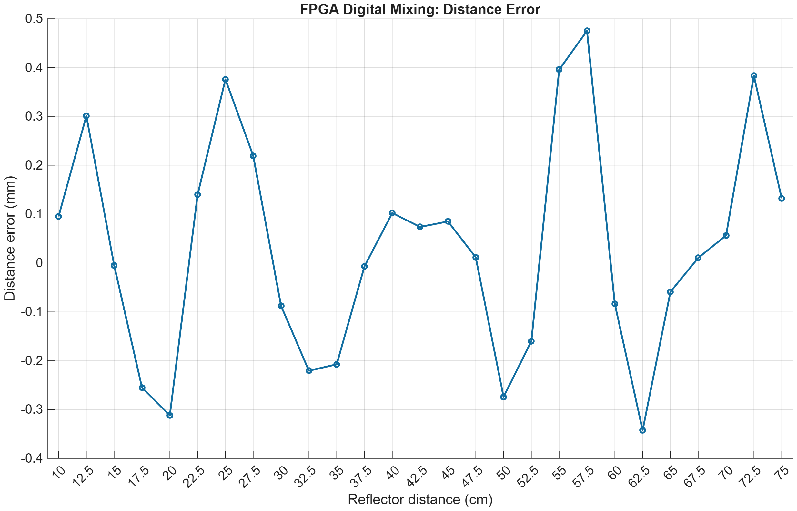
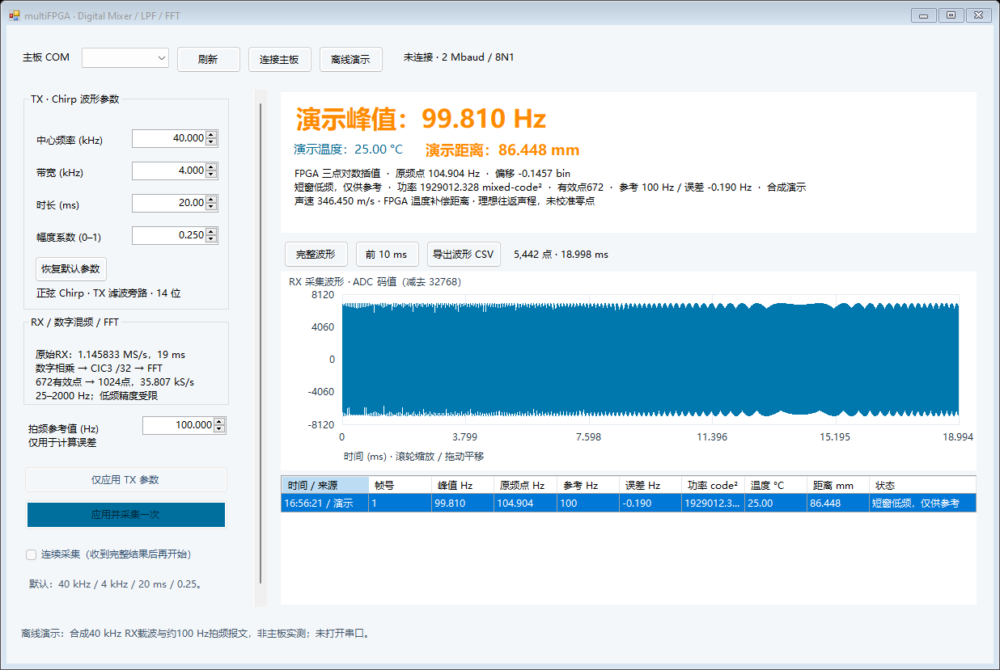

2026-10-26。实现位于 15_UsMimoTestBench_multiFPGA 副本；原工作工程与 original 备份未由本次修改。新版 Main 已编译，尚未在实板运行本版固件。
下载用 Main SOF · 副本新版上位机 · 更新的流程图 · 全部检查 · 仿真与编译证据
38–42 kHz 正弦 Chirp、20 ms、幅度0.25 → DAC/前端/声学通路 → 原始 RX ADC 1.145833 MS/s → 与同源数字正弦参考相乘 → CIC3低通 /32 → 35.807292 kS/s → 672点去直流和Kaiser4 → 补352零至1024点FFT → 25–2000 Hz最大峰 → FPGA三点对数插值 → TMP117温度补偿距离 → M4报文。
TX参考从原Chirp流水线的方波限幅前取出，与DAC输出寄存器对齐。ADC在DRDY同步事件锁存参考，再将它与SPI读回的样本作为同一组数据交出。乘法使用有符号16×16、32位乘积、Q15舍入及16位饱和；新增削顶标志位6。UART波形仍是原始载波每4点取1点的显示支路，FFT支路用全速混频后的数据。
| 检查 | 结果与范围 |
|---|---|
| 数字乘法 / 参考延迟 | 1,714组有效乘法：正负数、舍入、饱和、有效间隔及帧复位通过；18和84周期参考延迟通过。 |
| ADC与参考配对 | 200个真实SPI读出字、变化的参考、两次接收窗口通过；参考按DRDY锁存，不采用读完SPI时的当前TX值。 |
| 27距离点RTL | 10–75 cm，每2.5 cm；每帧21,770原始样本全部输入。CIC采样和全部513个FFT功率点与独立定点参考一致。最大误差0.475186 mm，RMSE 0.225428 mm。 |
| 真实采样节拍 | 50 cm向量使用144个165 MHz系统周期/原始点，672个有效点及FFT结果通过。 |
| 完整Main联调 | 19 ms接收、真实ADC SPI节拍、混频/低通/FFT/插值/温度距离、5,442个原始波形样本及11,058字节完整波形+M4通过。25°C、50 cm模型输出577.400885 Hz、500.101 mm。 |
| 真实TX IP与串口 | Intel Chirp IP的参数/启动及参考-DAC一致性通过；另有真实2 Mbaud串口位测试。完整Main报文测试加速了UART字节握手。 |
| 上位机 | 配置包raw RX、分片接收、全部原始数据、M4温度/距离/插值、异常及削顶标志检查通过；新完整RF联调报文也通过生产C#解析。 |
| Quartus时序 | 84项setup/hold/recovery/removal/pulse-width检查均通过，最差裕量+0.043 ns；未约束时钟/输入/输出统计均为0。 |
27点扫描保留全部数据，但压缩了空闲时钟；另做真实144周期节拍测试。完整Main联调采用行为模型TX波形/PLL/温度/ADC模拟输入，保留生产ADC SPI与数字处理；原始缓存用生产控制逻辑加行为存储，FFT存储用Intel模型。模拟ADC群延迟、真实换能器、多径和噪声不在本次理想误差图内。

8,589 / 56,480 ALM，45 / 156 DSP，273 / 686 RAM块。相比复制前主工程增加1个DSP块。保留165 MHz系统/DAC、27.5 MHz ADC和50 MHz FFT时钟。编译0错误；已检查的警告包括旧IP/位宽及I/O选项提示，没有Critical Warning。时序约束未放宽；只增加同一ADC稳定邮箱中参考字的CDC例外。
02_RTL/V0/output_files/UsMimoTestBench.sof 下载。默认40 kHz中心、4 kHz带宽、20 ms、幅度0.25。03_SW/RunMain.cmd，窗口标题包含multiFPGA。选择COM，先单次采集，再连续采集。PC发送RX Filter关闭，RTL也会强制旁路15 kHz模拟低通并保留增益选择。reference_extra_delay_cycles=0。这不代表真实ADC滤波器及模拟通路群延迟已标定。参数位于 02_RTL/V0/Simulation/FFT/main_settings.json，修改后运行configure_main.py并重编译Main。只补偿测得的固定电子延迟，不能把未知声学传播延迟直接对齐掉。温度补偿、插值或微米显示单位都不保证实物的微米精度；最大峰规则也不会自动消除多径/串扰换峰。
这是合成载波与示例拍频报文的离线预览，不是实板记录。
python 02_RTL/V0/Simulation/FFT/run_digital_mixer.py --arithmetic python 02_RTL/V0/Simulation/FFT/run_digital_mixer.py --pair python 02_RTL/V0/Simulation/FFT/run_digital_mixer.py --frames python 02_RTL/V0/Simulation/FFT/run_digital_mixer.py --real-cadence python 02_RTL/V0/Simulation/FFT/run_digital_mixer.py --top
| Distance / cm | Ideal / Hz | RTL / Hz | Error / mm |
|---|---|---|---|
| 10 | 116.618076 | 116.729158 | +0.095253 |
| 12.5 | 145.772595 | 146.123542 | +0.300937 |
| 15 | 174.927114 | 174.921394 | -0.004905 |
| 17.5 | 204.081633 | 203.784342 | -0.254927 |
| 20 | 233.236152 | 232.872456 | -0.311869 |
| 22.5 | 262.390671 | 262.553901 | +0.139970 |
| 25 | 291.545190 | 291.983500 | +0.375851 |
| 27.5 | 320.699708 | 320.955296 | +0.219166 |
| 30 | 349.854227 | 349.752081 | -0.087590 |
| 32.5 | 379.008746 | 378.751623 | -0.220483 |
| 35 | 408.163265 | 407.921373 | -0.207422 |
| 37.5 | 437.317784 | 437.309888 | -0.006771 |
| 40 | 466.472303 | 466.591688 | +0.102373 |
| 42.5 | 495.626822 | 495.712884 | +0.073798 |
| 45 | 524.781341 | 524.880500 | +0.085029 |
| 47.5 | 553.935860 | 553.949406 | +0.011616 |
| 50 | 583.090379 | 582.770735 | -0.274094 |
| 52.5 | 612.244898 | 612.058405 | -0.159918 |
| 55 | 641.399417 | 641.860970 | +0.395782 |
| 57.5 | 670.553936 | 671.108088 | +0.475186 |
| 60 | 699.708455 | 699.610876 | -0.083674 |
| 62.5 | 728.862974 | 728.463686 | -0.342389 |
| 65 | 758.017493 | 757.948777 | -0.058924 |
| 67.5 | 787.172012 | 787.184157 | +0.010414 |
| 70 | 816.326531 | 816.392324 | +0.056418 |
| 72.5 | 845.481050 | 845.928104 | +0.383349 |
| 75 | 874.635569 | 874.789985 | +0.132412 |
SOF SHA-256: e05d7edf56386811e43899c517b7f7db6148a8d1e4e8543185038f0eccef4390
GUI SHA-256: 3b5f9ff98ba0bf662682765ee00547e5628cf8f76fdf56f8abd57c037ceadf21